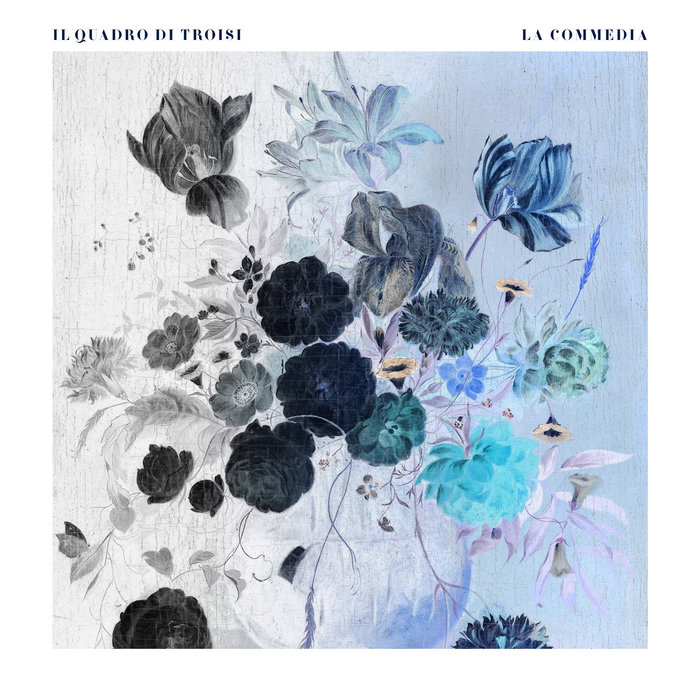

Posted on 2025-01-06 · 3 min read · Twenty Four · Album · Italy · Il Quadro di Troisi · Electronic
Contents
It’s interesting that an album sung entirely in Italian ended up being one of my favourites of the year, but perhaps not surprising given well written and arranged these songs are. They’re just the right side of electro-pop but also with an air of sophistication.
I can’t speak Italian but I do speak some romance languages, so I can sort of guess what the titles might mean.  Cover of La Commedia by Il Quadro Di Troisi “La Notte” is “The Night”, “Il Bucchi Neri” is “The Black Holes” (I’d thought it was the black mouths but I guess I was close!), and so on. As the for the lyrics, they’re catching enough for me to sing a phonetic version of them to myself on many occasions, though I’ve no idea what meaning I’ve been mangling!
Part of the album’s success is the arrangements, a lot of very interesting synth work is underpinning these songs and that works well in any language. Melodically the right stuff must be happening too because I’ve definitely been humming along in the places where I’m not brave enough to take on the lyrics.
La Commedia is their second album and their first as a trio. I’ve not listened to their (self-titled) first album yet - I’m sure I will at some point - but from the look of the tracklisting it might be a bit more expansive as the songs are longer and there’s more variety in song length. Everything on La Commedia is pretty much three or four minutes and the only criticism I have of this album is that it often feels like it is over just as it’s getting going.
If you’re in the market for a sophisticated electronic pop album, give this a go. Just don’t tell me what the lyrics really are if you happen to speak Italian!
Other options
Because I’ve loved so many albums this year, after each review I am going to include a couple of pointers to additional albums that you might enjoy if you like the album in the main review. This is not me showing off (well, not much), but rather giving credit to the many excellent albums released this year!
Nina Sinephro, Endlessness
A beautiful jazzy ambient album in ten parts, with a good deal of variation between parts. Similar to, but not the same as, the masterpiece “Promises” by Floating Points, Pharoah Sanders, and the London Symphony Orchestra. The main mood is laid back, but there’s also quite of frenetic stuff going on at points too.
Auntie Flo, In My Dreams (I’m A Bird And I’m Free)
Mostly for “Green City” the utterly amazing Fela Kuti-inspired single - especially the 12" version that draws the song out past fifteen minutes - which is probably my favourite song of the year. To be honest, everything else goes by in a bit of a blur, but that doesn’t necessarily detract from the quality of proceedings.
See Also
- 2024 Albums of the Year #6: Total Blue, Total Blue
- Maara, The Ancient Truth (on vinyl)
- 2024 Albums of the Year #7: MGMT, Loss Of Life
- 2024 Albums of the Year #8: Pet Shop Boys Nonetheless
- 2024 Albums of the Year #9: Cassandra Jenkins, My Light, My Destroyer